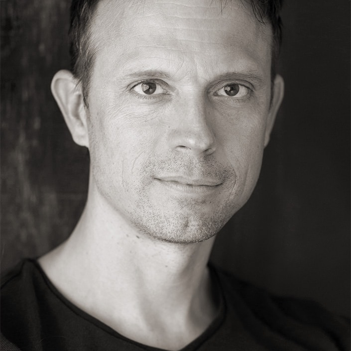
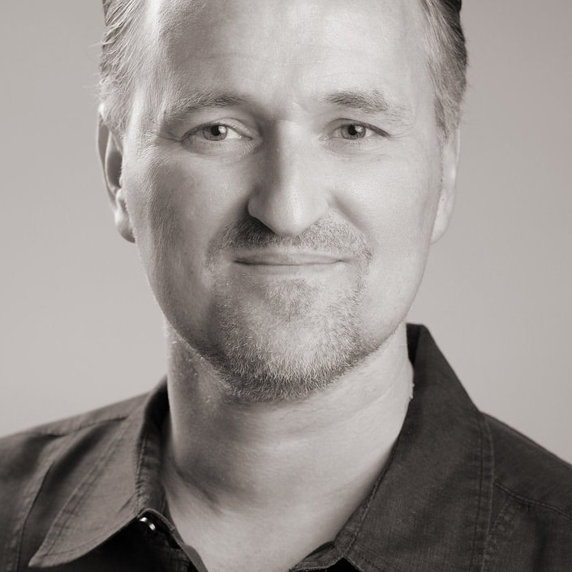

Bruno Birkhofer ist ein Schweizer Fotograf mit Spezialisierung auf Portrait- und Lifestyle-Fotografie. Mit über 20 Jahren Erfahrung in der professionellen Fotografie und mehreren internationalen Auszeichnungen weiß er genau, wie man Menschen in ihrem besten Licht einfängt. Für Bruno geht es nicht darum, Menschen schöner zu machen, als sie sind – es geht darum, ihre natürliche Sympathie und Charisma zur Geltung zu bringen.

Fotograf
Professioneller Fotograf in Amriswil TG, spezialisiert auf emotionale und ausdrucksstarke Portraitfotografie. Bruno ist nicht nur Fotograf, sondern auch Gründer einer Fotografieschule und hat jahrelange Erfahrung in der Portrait- und Werbefotografie. Er ist bekannt für seine Fähigkeit, Menschen in ihrem besten Licht zu zeigen und authentische Momente festzuhalten. Zuständig für die Region Zürich und Ostschweiz.
Fotografin
Mit über 10 Jahren professioneller Erfahrung in der Portrait- und People-Fotografie bringt Andrea Wärme und Einfühlungsvermögen in jedes Shooting. Sie ist geduldig, empathisch und versteht es, ihre Kunden zu entspannen und ihre authentische Seite zu zeigen. Die Fotos von Andrea sind lebendig, authentisch und überzeugend. Zuständig für die Region Zürich und Ostschweiz.

Fotograf
Felix ist ein erfahrener Profi mit 15 Jahren professioneller Fotografie. Basierend in Worb bei Bern, spezialisiert sich Felix auf Portrait- und Hochzeitsfotografie. Er hat ein Talent dafür, die beste Seite jedes Menschen herauszufinden und seine Kunden während des Shootings zu entspannen. Die Fotos von Felix strahlen Qualität, Wärme und Authentizität aus. Zuständig für die Region Bern und Westschweiz.
Spezialist
Portrait-Fotografie
Über 20 Jahre
Erfahrung
Geld-zurück-
Garantie